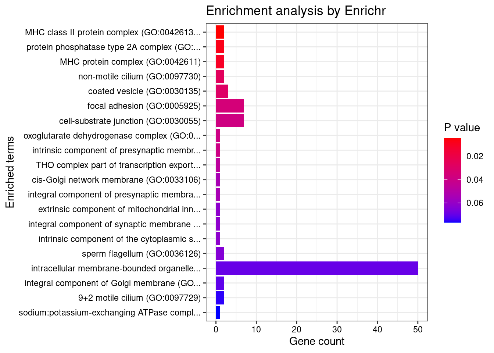
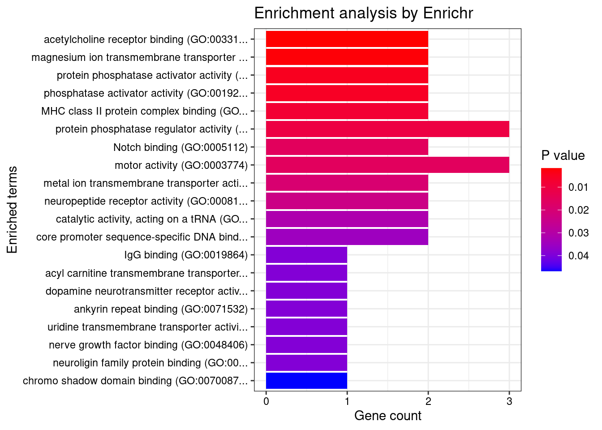

Last updated: 2022-04-20
Checks: 5 2
Knit directory: cTWAS_analysis/
This reproducible R Markdown analysis was created with workflowr (version 1.7.0). The Checks tab describes the reproducibility checks that were applied when the results were created. The Past versions tab lists the development history.
The R Markdown file has unstaged changes. To know which version of the R Markdown file created these results, you’ll want to first commit it to the Git repo. If you’re still working on the analysis, you can ignore this warning. When you’re finished, you can run wflow_publish to commit the R Markdown file and build the HTML.
Great job! The global environment was empty. Objects defined in the global environment can affect the analysis in your R Markdown file in unknown ways. For reproduciblity it’s best to always run the code in an empty environment.
The command set.seed(20211220) was run prior to running the code in the R Markdown file. Setting a seed ensures that any results that rely on randomness, e.g. subsampling or permutations, are reproducible.
Great job! Recording the operating system, R version, and package versions is critical for reproducibility.
Nice! There were no cached chunks for this analysis, so you can be confident that you successfully produced the results during this run.
Using absolute paths to the files within your workflowr project makes it difficult for you and others to run your code on a different machine. Change the absolute path(s) below to the suggested relative path(s) to make your code more reproducible.
| absolute | relative |
|---|---|
| /project2/xinhe/shengqian/cTWAS/cTWAS_analysis/data/SCZ_2018 | data/SCZ_2018 |
Great! You are using Git for version control. Tracking code development and connecting the code version to the results is critical for reproducibility.
The results in this page were generated with repository version 186d0ac. See the Past versions tab to see a history of the changes made to the R Markdown and HTML files.
Note that you need to be careful to ensure that all relevant files for the analysis have been committed to Git prior to generating the results (you can use wflow_publish or wflow_git_commit). workflowr only checks the R Markdown file, but you know if there are other scripts or data files that it depends on. Below is the status of the Git repository when the results were generated:
Ignored files:
Ignored: .ipynb_checkpoints/
Ignored: data/AF/
Untracked files:
Untracked: Rplot.png
Untracked: analysis/.ipynb_checkpoints/
Untracked: code/.ipynb_checkpoints/
Untracked: code/AF_out/
Untracked: code/Autism_out/
Untracked: code/BMI_S_out/
Untracked: code/BMI_out/
Untracked: code/Glucose_out/
Untracked: code/LDL_S_out/
Untracked: code/SCZ_2014_EUR_out/
Untracked: code/SCZ_2018_out/
Untracked: code/SCZ_2020_Single_out/
Untracked: code/SCZ_2020_out/
Untracked: code/SCZ_S_out/
Untracked: code/SCZ_out/
Untracked: code/T2D_out/
Untracked: code/ctwas_config.R
Untracked: code/mapping.R
Untracked: code/out/
Untracked: code/process_scz_2018_snps.R
Untracked: code/run_AF_analysis.sbatch
Untracked: code/run_AF_analysis.sh
Untracked: code/run_AF_ctwas_rss_LDR.R
Untracked: code/run_Autism_analysis.sbatch
Untracked: code/run_Autism_analysis.sh
Untracked: code/run_Autism_ctwas_rss_LDR.R
Untracked: code/run_BMI_analysis.sbatch
Untracked: code/run_BMI_analysis.sh
Untracked: code/run_BMI_analysis_S.sbatch
Untracked: code/run_BMI_analysis_S.sh
Untracked: code/run_BMI_ctwas_rss_LDR.R
Untracked: code/run_BMI_ctwas_rss_LDR_S.R
Untracked: code/run_Glucose_analysis.sbatch
Untracked: code/run_Glucose_analysis.sh
Untracked: code/run_Glucose_ctwas_rss_LDR.R
Untracked: code/run_LDL_analysis_S.sbatch
Untracked: code/run_LDL_analysis_S.sh
Untracked: code/run_LDL_ctwas_rss_LDR_S.R
Untracked: code/run_SCZ_2014_EUR_analysis.sbatch
Untracked: code/run_SCZ_2014_EUR_analysis.sh
Untracked: code/run_SCZ_2014_EUR_ctwas_rss_LDR.R
Untracked: code/run_SCZ_2018_analysis.sbatch
Untracked: code/run_SCZ_2018_analysis.sh
Untracked: code/run_SCZ_2018_ctwas_rss_LDR.R
Untracked: code/run_SCZ_2020_Single_analysis.sbatch
Untracked: code/run_SCZ_2020_Single_analysis.sh
Untracked: code/run_SCZ_2020_Single_ctwas_rss_LDR.R
Untracked: code/run_SCZ_2020_analysis.sbatch
Untracked: code/run_SCZ_2020_analysis.sh
Untracked: code/run_SCZ_2020_ctwas_rss_LDR.R
Untracked: code/run_SCZ_analysis.sbatch
Untracked: code/run_SCZ_analysis.sh
Untracked: code/run_SCZ_analysis_S.sbatch
Untracked: code/run_SCZ_analysis_S.sh
Untracked: code/run_SCZ_ctwas_rss_LDR.R
Untracked: code/run_SCZ_ctwas_rss_LDR_S.R
Untracked: code/run_T2D_analysis.sbatch
Untracked: code/run_T2D_analysis.sh
Untracked: code/run_T2D_ctwas_rss_LDR.R
Untracked: code/wflow_build.R
Untracked: code/wflow_build.sbatch
Untracked: data/.ipynb_checkpoints/
Untracked: data/BMI/
Untracked: data/GO_Terms/
Untracked: data/PGC3_SCZ_wave3_public.v2.tsv
Untracked: data/SCZ/
Untracked: data/SCZ_2014_EUR/
Untracked: data/SCZ_2018/
Untracked: data/SCZ_2020/
Untracked: data/SCZ_2020_Single/
Untracked: data/SCZ_S/
Untracked: data/Supplementary Table 15 - MAGMA.xlsx
Untracked: data/Supplementary Table 20 - Prioritised Genes.xlsx
Untracked: data/T2D/
Untracked: data/UKBB/
Untracked: data/UKBB_SNPs_Info.text
Untracked: data/gene_OMIM.txt
Untracked: data/gene_pip_0.8.txt
Untracked: data/mashr_Heart_Atrial_Appendage.db
Untracked: data/mashr_sqtl/
Untracked: data/scz_2018.RDS
Untracked: data/summary_known_genes_annotations.xlsx
Untracked: data/untitled.txt
Untracked: top_genes_32.txt
Untracked: top_genes_37.txt
Untracked: top_genes_43.txt
Untracked: top_genes_81.txt
Unstaged changes:
Modified: analysis/SCZ_Annotation_Analysis.Rmd
Note that any generated files, e.g. HTML, png, CSS, etc., are not included in this status report because it is ok for generated content to have uncommitted changes.
These are the previous versions of the repository in which changes were made to the R Markdown (analysis/SCZ_Annotation_Analysis.Rmd) and HTML (docs/SCZ_Annotation_Analysis.html) files. If you’ve configured a remote Git repository (see ?wflow_git_remote), click on the hyperlinks in the table below to view the files as they were in that past version.
| File | Version | Author | Date | Message |
|---|---|---|---|---|
| Rmd | 186d0ac | sq-96 | 2022-04-20 | update |
| html | 186d0ac | sq-96 | 2022-04-20 | update |
| Rmd | 6336dc6 | sq-96 | 2022-04-19 | update |
| Rmd | ba919ab | sq-96 | 2022-04-18 | update |
| html | ba919ab | sq-96 | 2022-04-18 | update |
| Rmd | 0552ba2 | sq-96 | 2022-04-18 | update |
| html | 0552ba2 | sq-96 | 2022-04-18 | update |
| Rmd | 9ddc9c4 | sq-96 | 2022-04-18 | update |
| Rmd | f6e7062 | sq-96 | 2022-04-17 | update |
brain_tissue <- list.files("/project2/xinhe/shengqian/cTWAS/cTWAS_analysis/data/SCZ_2018")
top_genes <- c()
all_genes <- c()
for(i in brain_tissue){
df <- readRDS(paste0("/project2/xinhe/shengqian/cTWAS/cTWAS_analysis/data/SCZ_2018/",i,"/SCZ_",i,"_ctwas_gene_res.RDS"))
all_genes <- c(all_genes,df$genename)
df <- df[df$susie_pip>=0.8,]
top_genes <- c(top_genes,df$genename)
}
top_genes <- unique(top_genes)
all_genes <- unique(all_genes)
set.seed(2022)
random_genes <- sample(all_genes,1000)library(readxl)
Supplementary_Table_15_MAGMA <- read_excel("data/Supplementary Table 15 - MAGMA.xlsx",
sheet = "Gene Lists")
summary_known_genes_annotations <- read_excel("data/summary_known_genes_annotations.xlsx",
sheet = "SCZ")
SCHEMA_genes <- Supplementary_Table_15_MAGMA$`SCHEMA (p<0.001)`
SCHEMA_genes <- SCHEMA_genes[!is.na(SCHEMA_genes)]
ASD_genes <- Supplementary_Table_15_MAGMA$`ASD (Satterstrom et al. 2019)`
ASD_genes <- ASD_genes[!is.na(ASD_genes)]
DDD_genes <- Supplementary_Table_15_MAGMA$`DDD (Kaplanis et al. 2019)`
DDD_genes <- DDD_genes[!is.na(DDD_genes)]
PGC3_genes <- summary_known_genes_annotations$`Gene Symbol`
PGC3_genes <- PGC3_genes[!is.na(PGC3_genes)]Supplementary_Table_20_Prioritised_Genes <- read_excel("data/Supplementary Table 20 - Prioritised Genes.xlsx",
sheet = "ST20 all criteria")
SMR_genes <- Supplementary_Table_20_Prioritised_Genes[,c("Symbol.ID","SMRmap","SMRsingleGene","HI.C.SMR")]
SMR_genes["index"] <- (SMR_genes$SMRmap==1) | (SMR_genes$SMRsingleGene==1) | (SMR_genes$HI.C.SMR==1)
SMR_genes <- SMR_genes[SMR_genes$index==1,]$Symbol.IDGO_files <- list.files("data/GO_Terms", pattern="*.txt", full.names=F)
annotation_table <- as.data.frame(matrix(0,nrow = length(top_genes),ncol = length(GO_files)))
GO_terms = c()
for(i in GO_files){GO_terms <- c(GO_terms,unlist(strsplit(i, "\\."))[1])}
colnames(annotation_table) <- GO_terms
annotation_table["SCHEMA_genes"] = as.integer(top_genes %in% SCHEMA_genes)
annotation_table["ASD_genes"] = as.integer(top_genes %in% ASD_genes)
annotation_table["DDD_genes"] = as.integer(top_genes %in% DDD_genes)
annotation_table["PGC3_genes"] = as.integer(top_genes %in% PGC3_genes)
annotation_table["PGC3_genes_without_SMR"] = as.integer(top_genes %in% setdiff(PGC3_genes,SMR_genes))
annotation_table <- cbind(top_genes,annotation_table)
annotation_table$top_genes <- as.character(annotation_table$top_genes)
for(i in 1:length(GO_files)){
GO_list <- data.table::fread(paste0("data/GO_Terms/",GO_files[i]),header = F)
for(j in (1:length(top_genes))){
target_gene <- top_genes[j]
if(target_gene %in% GO_list$V2){
annotation_table[j,i] = 1
}
}
}
annotation_table <- annotation_table[,c("top_genes","SCHEMA_genes","ASD_genes","DDD_genes",
"PGC3_genes","PGC3_genes_without_SMR",GO_terms)]library(reactable)
reactable(annotation_table)Registered S3 method overwritten by 'shiny':
method from
print.key_missing fastmapfisher.test(matrix(c(sum(top_genes %in% SCHEMA_genes),length(top_genes)-sum(top_genes %in% SCHEMA_genes),sum(random_genes %in% SCHEMA_genes),1000-sum(random_genes %in% SCHEMA_genes)),ncol=2))
Fisher's Exact Test for Count Data
data:
p-value = 1
alternative hypothesis: true odds ratio is not equal to 1
95 percent confidence interval:
0.0000 894.3169
sample estimates:
odds ratio
0 fisher.test(matrix(c(sum(top_genes %in% ASD_genes),length(top_genes)-sum(top_genes %in% ASD_genes),sum(random_genes %in% ASD_genes),1000-sum(random_genes %in% ASD_genes)),ncol=2))
Fisher's Exact Test for Count Data
data:
p-value = 1
alternative hypothesis: true odds ratio is not equal to 1
95 percent confidence interval:
0.0000 125.0094
sample estimates:
odds ratio
0 fisher.test(matrix(c(sum(top_genes %in% DDD_genes),length(top_genes)-sum(top_genes %in% DDD_genes),sum(random_genes %in% DDD_genes),1000-sum(random_genes %in% DDD_genes)),ncol=2))
Fisher's Exact Test for Count Data
data:
p-value = 0.3448
alternative hypothesis: true odds ratio is not equal to 1
95 percent confidence interval:
0.05843875 19.66929269
sample estimates:
odds ratio
2.618021 fisher.test(matrix(c(sum(top_genes %in% PGC3_genes),length(top_genes)-sum(top_genes %in% PGC3_genes),sum(random_genes %in% PGC3_genes),1000-sum(random_genes %in% PGC3_genes)),ncol=2))
Fisher's Exact Test for Count Data
data:
p-value = 1.368e-06
alternative hypothesis: true odds ratio is not equal to 1
95 percent confidence interval:
7.71638 138.30834
sample estimates:
odds ratio
31.86717 fisher.test(matrix(c(sum(top_genes %in% setdiff(PGC3_genes,SMR_genes)),length(top_genes)-sum(top_genes %in% setdiff(PGC3_genes,SMR_genes)),sum(random_genes %in% setdiff(PGC3_genes,SMR_genes)),1000-sum(random_genes %in% setdiff(PGC3_genes,SMR_genes))),ncol=2))
Fisher's Exact Test for Count Data
data:
p-value = 0.1552
alternative hypothesis: true odds ratio is not equal to 1
95 percent confidence interval:
0.1472542 100.1858900
sample estimates:
odds ratio
7.873808 library(enrichR)Welcome to enrichR
Checking connection ... Enrichr ... Connection is Live!
FlyEnrichr ... Connection is available!
WormEnrichr ... Connection is available!
YeastEnrichr ... Connection is available!
FishEnrichr ... Connection is available!dbs <- c("GO_Biological_Process_2021", "GO_Cellular_Component_2021", "GO_Molecular_Function_2021")
if (length(top_genes)>0){
GO_enrichment <- enrichr(top_genes, dbs)
for (db in dbs){
print(db)
df <- GO_enrichment[[db]]
print(plotEnrich(GO_enrichment[[db]]))
df <- df[df$Adjusted.P.value<0.05,c("Term", "Overlap", "Adjusted.P.value", "Genes")]
print(df)
}
}Uploading data to Enrichr... Done.
Querying GO_Biological_Process_2021... Done.
Querying GO_Cellular_Component_2021... Done.
Querying GO_Molecular_Function_2021... Done.
Parsing results... Done.
[1] "GO_Biological_Process_2021"
Term
1 mitochondrial tRNA processing (GO:0090646)
2 signal peptide processing (GO:0006465)
3 positive regulation of membrane protein ectodomain proteolysis (GO:0051044)
Overlap Adjusted.P.value Genes
1 2/8 0.03299186 ELAC2;TRIT1
2 2/11 0.03299186 SPCS1;FURIN
3 2/15 0.04176107 PACSIN3;FURIN
[1] "GO_Cellular_Component_2021"
[1] Term Overlap Adjusted.P.value Genes
<0 rows> (or 0-length row.names)
[1] "GO_Molecular_Function_2021"
[1] Term Overlap Adjusted.P.value Genes
<0 rows> (or 0-length row.names) Description
96 FANCONI ANEMIA, COMPLEMENTATION GROUP I
99 Reticular Dystrophy Of Retinal Pigment Epithelium
108 PROSTATE CANCER, HEREDITARY, 2
109 COMBINED OXIDATIVE PHOSPHORYLATION DEFICIENCY 17
110 HYPOGONADOTROPIC HYPOGONADISM 22 WITH OR WITHOUT ANOSMIA
112 ENCEPHALOPATHY, ACUTE, INFECTION-INDUCED (HERPES-SPECIFIC), SUSCEPTIBILITY TO, 7
113 EPILEPSY, FAMILIAL TEMPORAL LOBE, 8
115 RETINAL DYSTROPHY WITH OR WITHOUT EXTRAOCULAR ANOMALIES
116 COMBINED OXIDATIVE PHOSPHORYLATION DEFICIENCY 35
88 Refractory anemia with ringed sideroblasts
FDR Ratio BgRatio
96 0.02411874 1/18 1/9703
99 0.02411874 1/18 1/9703
108 0.02411874 1/18 1/9703
109 0.02411874 1/18 1/9703
110 0.02411874 1/18 1/9703
112 0.02411874 1/18 1/9703
113 0.02411874 1/18 1/9703
115 0.02411874 1/18 1/9703
116 0.02411874 1/18 1/9703
88 0.04337569 1/18 2/9703
sessionInfo()R version 3.6.1 (2019-07-05)
Platform: x86_64-pc-linux-gnu (64-bit)
Running under: Scientific Linux 7.4 (Nitrogen)
Matrix products: default
BLAS/LAPACK: /software/openblas-0.2.19-el7-x86_64/lib/libopenblas_haswellp-r0.2.19.so
locale:
[1] LC_CTYPE=en_US.UTF-8 LC_NUMERIC=C
[3] LC_TIME=en_US.UTF-8 LC_COLLATE=en_US.UTF-8
[5] LC_MONETARY=en_US.UTF-8 LC_MESSAGES=en_US.UTF-8
[7] LC_PAPER=en_US.UTF-8 LC_NAME=C
[9] LC_ADDRESS=C LC_TELEPHONE=C
[11] LC_MEASUREMENT=en_US.UTF-8 LC_IDENTIFICATION=C
attached base packages:
[1] stats graphics grDevices utils datasets methods base
other attached packages:
[1] disgenet2r_0.99.2 enrichR_3.0 reactable_0.2.3 readxl_1.3.1
[5] workflowr_1.7.0
loaded via a namespace (and not attached):
[1] Rcpp_1.0.8 getPass_0.2-2 ps_1.6.0 assertthat_0.2.1
[5] rprojroot_2.0.2 digest_0.6.29 utf8_1.2.2 mime_0.12
[9] plyr_1.8.6 R6_2.5.1 cellranger_1.1.0 reactR_0.4.4
[13] evaluate_0.14 httr_1.4.2 ggplot2_3.3.5 highr_0.9
[17] pillar_1.6.4 rlang_1.0.1 curl_4.3.2 rstudioapi_0.13
[21] data.table_1.14.2 whisker_0.3-2 callr_3.7.0 jquerylib_0.1.4
[25] rmarkdown_2.11 labeling_0.4.2 stringr_1.4.0 htmlwidgets_1.3
[29] munsell_0.5.0 shiny_1.3.2 compiler_3.6.1 httpuv_1.5.1
[33] xfun_0.29 pkgconfig_2.0.3 htmltools_0.5.2 tidyselect_1.1.1
[37] tibble_3.1.6 fansi_1.0.2 crayon_1.5.0 dplyr_1.0.7
[41] later_0.8.0 grid_3.6.1 jsonlite_1.7.2 xtable_1.8-4
[45] gtable_0.3.0 lifecycle_1.0.1 DBI_1.1.2 git2r_0.26.1
[49] magrittr_2.0.2 scales_1.1.1 cli_3.1.0 stringi_1.7.6
[53] reshape2_1.4.4 farver_2.1.0 fs_1.5.2 promises_1.0.1
[57] ellipsis_0.3.2 vctrs_0.3.8 generics_0.1.1 rjson_0.2.20
[61] tools_3.6.1 glue_1.6.2 purrr_0.3.4 crosstalk_1.0.0
[65] processx_3.5.2 fastmap_1.1.0 yaml_2.2.1 colorspace_2.0-2
[69] knitr_1.36